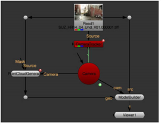

Open topic with navigation
Connecting the ModelBuilder Node
To connect the ModelBuilder node:
|
1.
|
If you don’t already have a tracked camera that matches your footage, create one using the CameraTracker node (see Camera Tracking). |
ModelBuilder needs a changing Camera (with a change of more than 5 degrees) in order to calculate 3D points from your 2D footage.
|
2.
|
Select 3D > Geometry > ModelBuilder to create a ModelBuilder node. |
|
3.
|
Connect your Camera node to ModelBuilder’s cam input, and your 2D footage to its src input. |
Note that the objects in your src footage that you want to model should not be moving, as ModelBuilder works best with static objects.
|
4.
|
If you have 3D geometry (such as a shape or a point cloud) that you want to use as a reference when positioning new shapes, connect it to ModelBuilder’s geo input. |
For example, you can use the PointCloudGenerator node (see Creating Dense Point Clouds) to create a 3D point cloud for your shot, and connect that to the geo input. When creating new shapes, you can then select vertices on the point cloud to automatically align the shapes with the point cloud. This gives you an approximate initial position for your shapes.
|
5.
|
If you have a 2D texture image that you want to display as a background in the UV preview window and on the model in the 3D Viewer, connect it to ModelBuilder's tex input. |
|
6.
|
Attach a Viewer to the output of the ModelBuilder node. |
